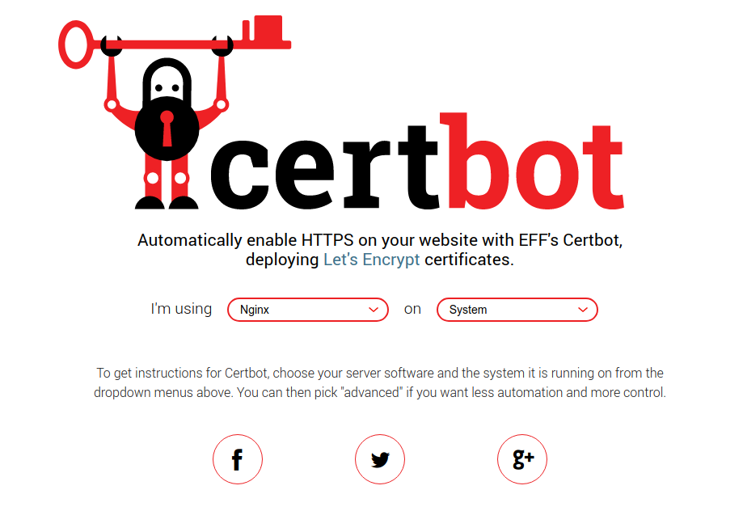
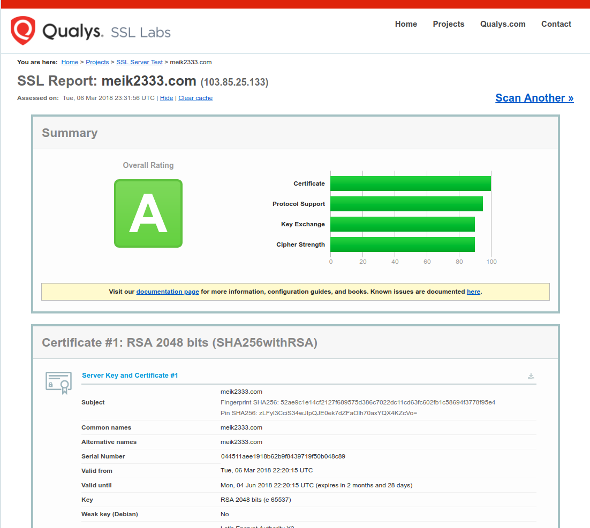

谷歌浏览器自 17 年起标记非 HTTPS 的网站的密码输入为不安全的，从 18 年 7 月份起将所有非 HTTPS 的网站标记为不安全。在谷歌 14 年的这篇博客中说明，谷歌搜索引擎将会提高 HTTPS 网站的权重。
使用了 HTTPS 协议的网站不一定是安全的，但是不使用 HTTPS 的网站是很不安全的。在手机浏览器上访问一些 HTTP 的网站，经常会被插入运营商的广告；使用不安全的网络连接时，浏览内容也很容易被拦截。因此，网站升级为 HTTPS 是很有必要的。
Let’s Encrypt 是一家提供免费 HTTPS 证书的服务商，每次申请的证书有效期为 90 天，可以通过配置定时任务自动申请证书。
环境
- CentOS 7
- nginx/1.12.2
安装
在这个网站选择自己的系统与软件，下载对应系统的 certbot 。

以我的系统为例：
下载到本地
1 | wget https://dl.eff.org/certbot-auto |
安装
1 | sudo ./certbot-auto --nginx |
中间会让你填邮箱地址和选择网站，依次填写完成即可。
自动更新
Let’s Encrypt 的证书有效期为 90 天，不过并不是说每过 90 天就要重新配置一遍， certbot-auto 提供了 renew 命令以检查证书有效期并自动更新，只要将定时任务添加至系统即可。
1 | sudo vim /etc/crontab |
将下面的任务添加至文件底部
1 | 0 0,12 * * * python -c 'import random; import time; time.sleep(random.random() * 3600)' && ./path/to/certbot-auto renew |
然后更新定时任务
1 | sudo crontab /etc/crontab |
大功告成！
可以去这个网站检测 ssl 证书。
